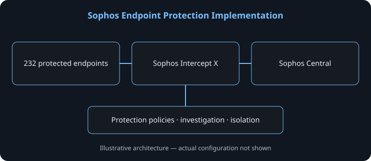

Centralized administration
Sophos Central Management; Endpoint Health Monitoring.
03 / ENDPOINT SECURITY / COMPLETED IMPLEMENTATION
Arjay Datuin · Retail & Distribution IT
Endpoint security implementation to help protect business workstations and support device security administration.

Conceptual diagram only; actual deployment topology and configurations are not disclosed.
Confirmed deployment features.
Sophos Central Management; Endpoint Health Monitoring.
Malware Protection; Ransomware Protection; Tamper Protection.
Application Control; Web Control; Peripheral / USB Control.
Threat Investigation; Device Isolation.
Centralized visibility, consistent device protection and incident response capabilities support security operations. No measured reduction in incidents is claimed.
Product and enabled controls are confirmed by the project owner. Version, licensing and measured outcomes are not supplied. Publish only employer-approved evidence.
Technical documentation (Markdown)The résumé lists endpoint antivirus implementation under the MIS IT Section Head role for malware and ransomware defense. The Intercept X edition and 232 endpoints were supplied separately; the exact rollout date is not documented.